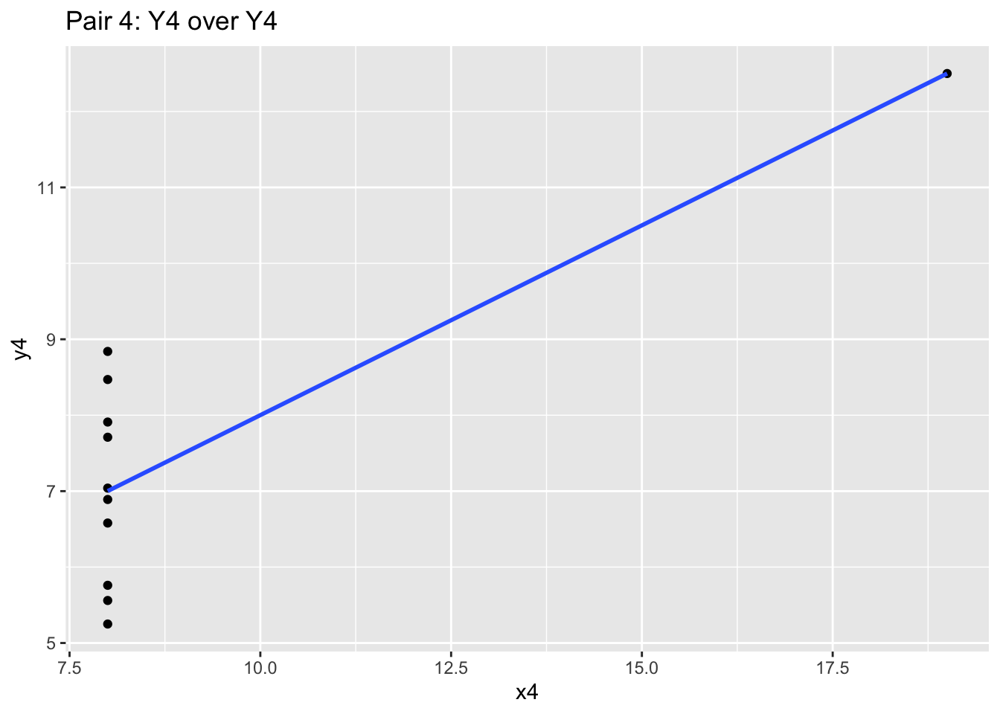
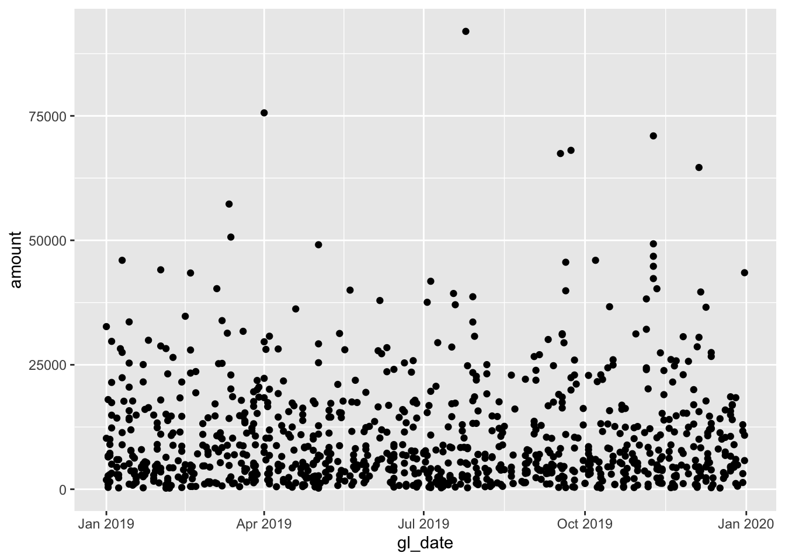
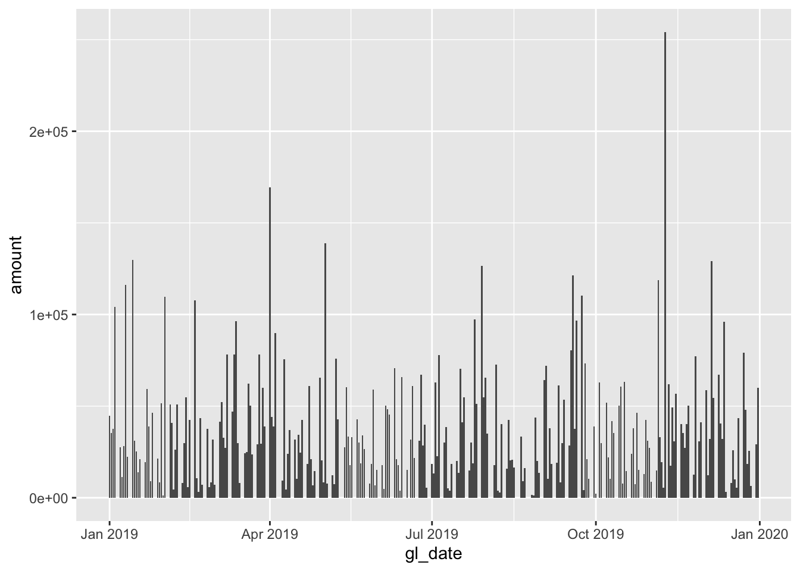
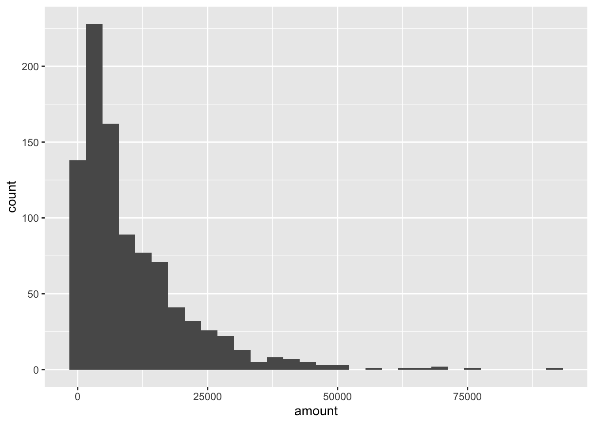
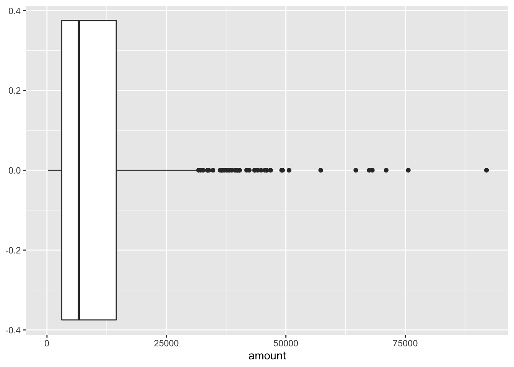
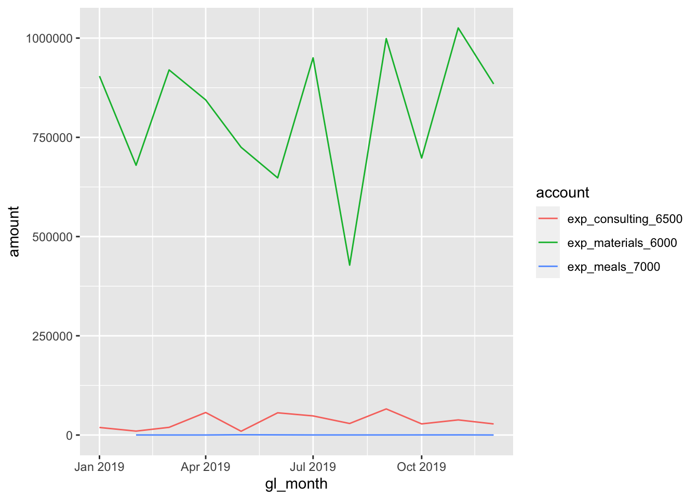
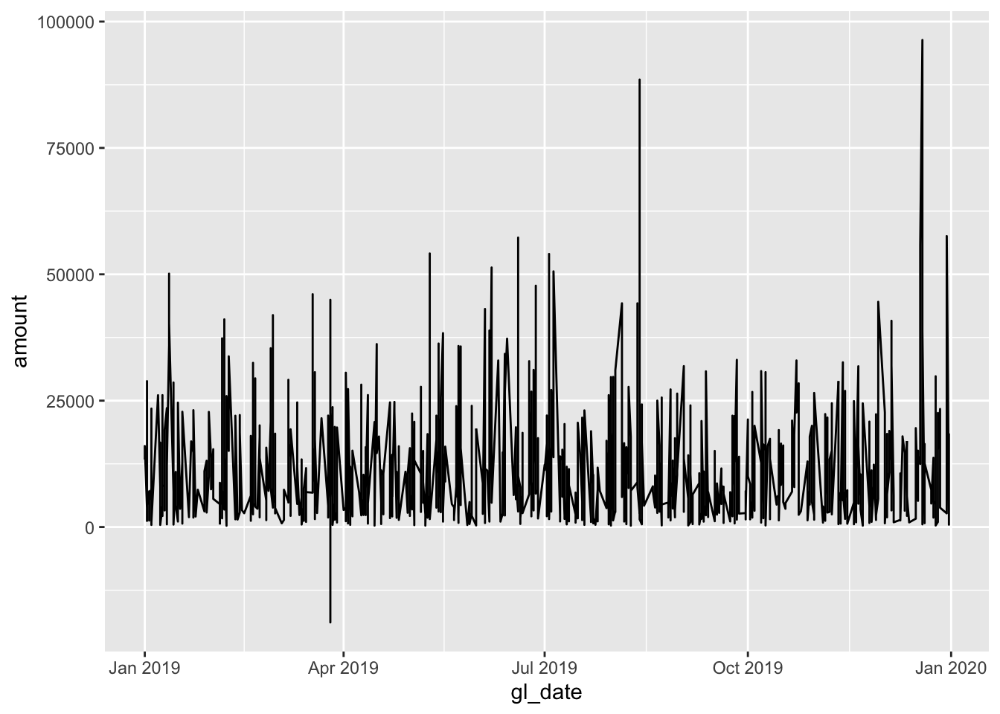

Chapter 8 Exploring data
As for exploring data, there is no quick, one-click method to explore your data, whether at a high level or in more granular detail. Realistically, you will oscillate between cleaning and exploration before you get the data into a final, testable state, and understand better what you are looking at.
For this section we will still use the company database, a unique dataset, along with some more packages - mainly, ggplot2.
library(dplyr)
library(tidyr)
library(lubridate)
library(DBI)
library(ggplot2) # For graphics
dir.create("data", showWarnings = FALSE)
download.file(url = "https://github.com/jonlinca/auditanalytics/raw/master/data/rauditanalytics.sqlite",
destfile = "data/rauditanalytics.sqlite", mode = "wb")
con <- dbConnect(RSQLite::SQLite(), "data/rauditanalytics.sqlite")
gl <- tbl(con, 'gl') %>%
collect()
vendors <- tbl(con, 'vendors') %>%
collect()
dbDisconnect(con)8.1 Basic Statistics
Performing summaries, or profiling the data, is a great way to begin analyzing data. It allows you to understand general numeric performance of a group. In our GL account, we have a materials category - lets isolate by that and begin our analysis:
materials <- gl %>%
filter(account == 'exp_materials_6000') %>%
mutate(gl_date = as_date(gl_date_char)) %>% # We demonstrated how to handle dates in the Cleaning chapter
select(-gl_date_char)summary() gives a high level preview of each field, including the type and the statistical profile of the data table:
## je_num amount gl_date vendor_id
## Min. : 1.0 Min. : 214.3 Min. :2019-01-01 Min. :2323
## 1st Qu.: 248.0 1st Qu.: 3097.4 1st Qu.:2019-03-28 1st Qu.:2323
## account description
## Length:937 Length:937
## Class :character Class :character
## [ reached getOption("max.print") -- omitted 4 rows ]If we focus on amount, we can reproduce the same summaries as well, useful if we want to extract items relative to the criteria:
## [1] 214.35## [1] 91974.59## [1] 10357.99median(materials$amount) # The value in the middle between upper half and lower half. If these are different than the average, then you may expect some skew in the data set.## [1] 6683.74Quartiles are useful because they help you generally understand where the majority of the data lies. These also also known as quantiles (or percentiles), but they cover the same area of a normal curve.
## 0% 25% 50% 75% 100%
## 214.35 3097.36 6683.74 14495.68 91974.59## 25%
## 3097.36## 75%
## 14495.68## [1] 11398.32You may have missing values in your data set that show up as NA. Its important to recognize how you will diagnose and treat NAs. If a column has NAs, you may choose to remove them by using the argument na.rm = TRUE, which simply ignores these values when performing the calculation.
## [1] NA## [1] 3In accounting, it may be important to know the absolute value of a number. They’re useful in audit situations as they help express total activity of the subject, as positive and negative values may either zero out the total or mask credit activity and reversals. They’re also useful for calculating errors, as you may be not concerned about the direction of the error (debit or credit) but the total magnitude instead.
## [1] 9705440## [1] 9705440We can even do basic correlation plots in R of two numerical data sets:
x <- c(1, 2, 3, 4)
y <- c(2, 4, 6, 8)
cor(x, y) # The correlation of X and Y. 1 means positively highly correlated, -1 means negatively highly coorelated, and 0 means no discerable pattern.## [1] 18.2 Summarizations
TODO - Group by and Summarize Tables
8.3 Why bother visualizing?
With such useful statistical and summary functions, you may wonder why you ever need to delve into graphics. While summary statistics are fun (and perhaps, highly accurate and even authoritative’), they don’t help bring to light full patterns of your data. The power of visual deduction can not be understated, especially in situations where superficially summary statistics have no issues.
Consider this data set, which are merely 4 pairs of x-y values (i.e. x1 goes with y1 etc):
## x1 x2 x3 x4 y1 y2 y3 y4
## 1 10 10 10 8 8.04 9.14 7.46 6.58
## [ reached 'max' / getOption("max.print") -- omitted 10 rows ]If we did statistical testing on these pairs, we will notice they have nearly identical summary statistics:
## [1] 9## [1] 9## [1] 9## [1] 9## [1] 7.500909## [1] 7.500909## [1] 7.5## [1] 7.500909And even their correlatons are similar:
cor(anscombe$x1, anscombe$y1); cor(anscombe$x2, anscombe$y2); cor(anscombe$x3, anscombe$y3); cor(anscombe$x4, anscombe$y4)## [1] 0.8164205## [1] 0.8162365## [1] 0.8162867## [1] 0.8165214With the mean and correlation statistics, you may jump to the conclusion that these datasets may be shaped identically. However, we should seriously consider plotting the data to validate our initial assumption that the data is similar.
We will use the ggplot2 to chart these x-y pairs and try to understand the data we are looking at. We’ll explain ggplot2 syntax later, so for now, focus on the graph produced.
If we produce the four graphs together, what do you notice?
ggplot(anscombe, aes(x = x1, y = y1)) +
geom_point() +
stat_smooth(method="lm", se = FALSE) +
labs(title="Pair 1: Y1 over X1")ggplot(anscombe, aes(x = x2, y = y2)) +
geom_point() +
stat_smooth(method="lm", se = FALSE) +
labs(title="Pair 2: Y2 over X2")ggplot(anscombe, aes(x = x3, y = y3)) +
geom_point() +
stat_smooth(method="lm", se = FALSE) +
labs(title="Pair 3: Y3 over X3")ggplot(anscombe, aes(x = x4, y = y4)) +
geom_point() +
stat_smooth(method="lm", se = FALSE) +
labs(title="Pair 4: Y4 over Y4")
These four charts and scatterplots themselves are quite different! While the blue correlation line and the prior summary statistics are similar, the points all follow a different general path. Independently looking at the graphics for each one will give you different insight, and may influence your audit approach. Graphics matter a lot!
8.4 Data Visualization (How)
ggplot2 is the package that many consider to be one of the differentiating strengths of the R universe. It is one of the most elegant methods of visualizing data, and will help you understand your audit subject.
Back to our materials analysis.
## # A tibble: 6 x 6
## je_num amount gl_date vendor_id account description
## <int> <dbl> <date> <int> <chr> <chr>
## 1 1 608. 2019-12-27 2843 exp_materials_6… Packaging and boxes
## 2 2 27822. 2019-06-05 2843 exp_materials_6… Packaging and boxes
## 3 4 23434. 2019-07-29 2323 exp_materials_6… Paper
## 4 5 21457. 2019-01-04 2737 exp_materials_6… Quality control testing s…
## 5 6 2006. 2019-02-13 2323 exp_materials_6… Sewing machines
## 6 7 4557. 2019-12-03 2737 exp_materials_6… Quality control testing s…One of the most common charts is a time-series plot. We’ll use this example to build up the assembly of a ggplot.

The foundations of any ggplot are essentially:
data- The data frame you want to visualize,mapping- The aesthetics, which dictate the x and y (generally for the rest of the ggplot), andgeom_*- The visualization mechanism you want to apply
When you specify a single mapping up front, it will be used for all the subsequent geoms called. You can also specify a mapping for each geom as well, which is useful for isolating points.
This foundations layer of data, mapping and geom_* allows us to call different geoms and perspectives of looking at the data.

Some geoms don’t even need an x. For example, understanding distributions of a single variable:


Sometimes you may want an aggregated version of a chart. For example, you may want to see transactions aggregated by month or even day of week. It is a good habit to transform the data you want prior to putting it into ggplot. For example, a line chart may simply be too messy:
Aggregating this same information by month may be more illustrative:
monthly_mats <- materials %>%
mutate(gl_month = floor_date(gl_date, 'month')) %>% # Rounds the date down to the first of the month
group_by(gl_month) %>%
summarize(amount = sum(amount))## `summarise()` ungrouping output (override with `.groups` argument)8.4.1 Facets
Another powerful feature of ggplot2 is facets - that is, the ability to show how different categories of the same data may look in the same dataset. In our GL dataset, we actually had multiple types of expenses:
## [1] "exp_materials_6000" "liab_accountspayable_2000"
## [3] "exp_consulting_6500" "exp_meals_7000"
## [5] "liab_creditcardpayable_2100"We can pull these specific expense accounts (starting with ‘exp_’), and can choose how we want to plot them:
expense <- gl %>%
filter(account %in% c('exp_materials_6000', 'exp_consulting_6500', 'exp_meals_7000')) %>%
mutate(gl_date = as_date(gl_date_char),
gl_month = floor_date(gl_date, 'month')) %>%
group_by(account, gl_month) %>% # Need to add a new layer of grouping to preserve the account
summarize(amount = sum(amount))## `summarise()` regrouping output by 'account' (override with `.groups` argument)ggplot(data = expense, aes(x = gl_month, y = amount, colour = account)) + # We can specify the colour now too, depending on the geom_*
geom_line()
Instead of plotting them onto the same chart, we can facet_* them:
ggplot(data = expense, aes(x = gl_month, y = amount)) + # We can specify the colour now too!
geom_line() +
facet_grid(. ~ account) # Syntax for variable, either in the (row ~ column)... or both!